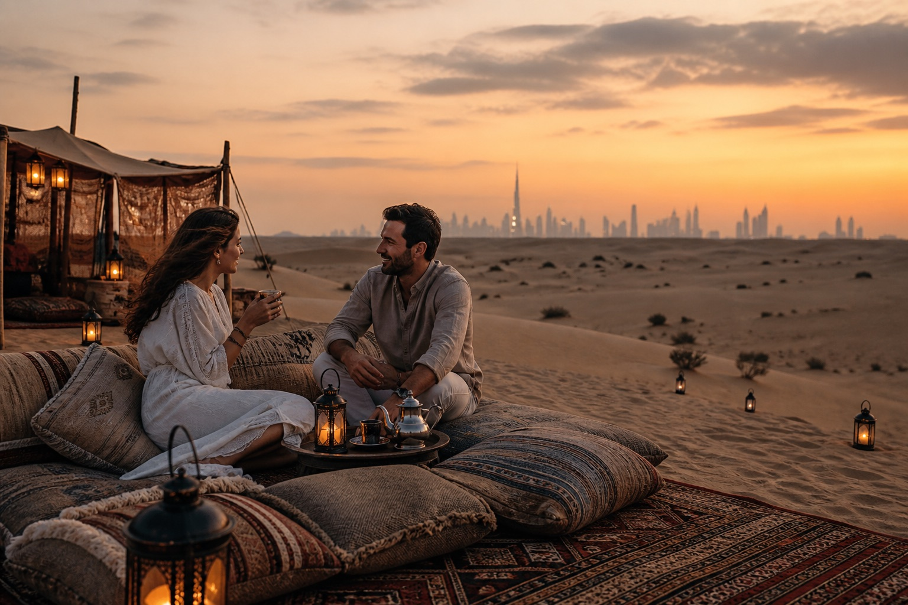
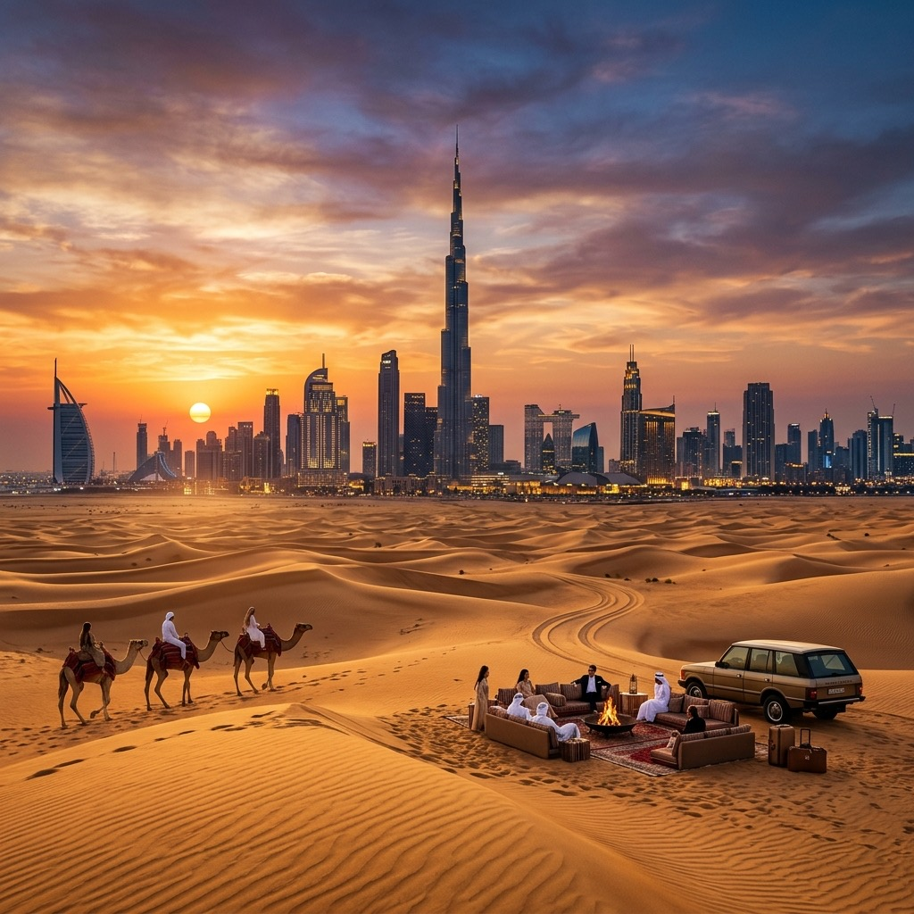

Dubai.
Entre dunas e horizontes.
O silêncio do deserto. A cidade acesa ao longe. Arquitetura futurista arrebatadora, alta gastronomia internacional e uma noite mágica sob as estrelas das dunas.
O silêncio do deserto. A cidade acesa ao longe. Arquitetura futurista arrebatadora, alta gastronomia internacional e uma noite mágica sob as estrelas das dunas.

Dubai é frequentemente lembrada pelo luxo monumental, mas o verdadeiro encanto está em vivenciar a quietude mística do deserto, provar o chá com especiarias ao som da brisa nas dunas e navegar pelas águas azuis do Golfo Pérsico em um iate privativo.
A curadoria da Liliam Silva organiza cada acesso VIP, reservas nos melhores restaurantes e transfers com pontualidade impecável.
Conversar sobre Dubai
Equilíbrio perfeito entre arquitetura de ponta, experiências no deserto e praias de águas mornas.
Este roteiro é uma inspiração. Duração, passeios e serviços serão definidos na proposta, conforme suas preferências e disponibilidade.
Recepção privativa no aeroporto e check-in em resort na praia de Jumeirah ou Downtown. Visita ao topo do Burj Khalifa, Museu do Futuro e cruzeiro ao pôr do sol na Dubai Marina.
Travessia pelas dunas douradas em 4x4 privativo, falcoaria tradicional ao entardecer e jantar com alta gastronomia árabe em acampamento de luxo reservado.
Excursão privativa até a capital dos Emirados. Visita deslumbrante à Grande Mesquita Sheikh Zayed, ao museu Louvre Abu Dhabi e almoço com vista para o mar.
Passeio em barco tradicional (abra) pelo Dubai Creek, exploração dos souks de ouro e especiarias antigas, dia de descanso em beach club exclusivo e retorno.